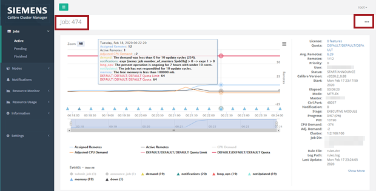
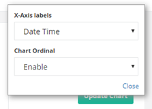

This procedure describes how you can use
chart menu functions to customize the displayed job data in the
CalCM dashboard web application.
Prerequisites
The CalCM
daemon (calcmd) and CalCM dashboard web application must be running as
described in “Starting the CalCM Daemon”.
Browser access
to the CalCM dashboard web application.
You are logged
into the CalCM dashboard web application with authentication information
that allows you access to the menu items on the left‑side of the
dashboard.
Note: The CalCM dashboard displays a web login page requesting
authentication information (user name and password). Some menus
and actionable items are only accessible at certain user levels.
For more information on user authentication in the CalCM dashboard,
see the LDAP-related configuration keywords in the calcm_http_server_app.tcl application.
Procedure
- Open a
browser and enter the server name on which the CalCM daemon is running
and the dashboard server port specified in the CalCM configuration
file (calcmd.conf). For example,
DASHBOARDPORT = 9902
enter in the browser,
http://server_name:9902
- In the
Active Jobs page, click a job ID in the Job column of the table.
The chart information with a plot of the selected job
ID appears in the job detail page.
Figure 1. Job
Detail Page and Chart Menu
- To set
the display options for the chart, click the Chart menu
(the three dots icon) in the upper‑right corner of the job detail
page.
The Chart menu icon only appears
if the page has a chart.
This opens a menu with X‑Axis labels and Chart
Ordinal menu selections.

- In the X‑Axis
labels menu, select your preferred time format for the
x‑axis of the job plot. You can choose from Date Time (the
default), Elapsed Time, and Epoch
Time.
- In the Chart
Ordinal menu, select your preference to either Enable (the
default) or Disable the ordinal x‑axis display.
An ordinal axis in a chart displays regular increments
for the scale. Disabling the ordinal axis can result in a more realistic
display of data that accounts for shorter and longer time periods
and gaps in the sampled data.
Results
You have used the chart menu functions to set the x‑axis label
and scale preferences for displaying chart data in the CalCM dashboard
web application. These preferences are saved with your user login
for the next time you access the CalCM dashboard.